Abstract
Collecting demonstrations for dexterous manipulation is difficult to scale across robot hands with different kinematics and contact geometry. Existing interfaces often require embodiment-specific sensing hardware, motion retargeting, or visual correction. We present WUDI, a Wearable, Unified Interface for Dexterous manipulation that separates a shared sensorized exoskeleton from interchangeable passive hands and linkages. This design reuses the sensing hardware across embodiments and supports robot-free demonstration collection without visual correction within the supported workspace. We evaluate demonstration collection and policy learning with WUJI Hand v1 and LEAP Hand. To assess functional manipulation, we introduce OTHER, an eight-task suite inspired by occupational therapy that spans precision grasping, tool use, pulling, rotation, compression, and fastening. A 12-participant study evaluates usability and task performance, and demonstrations collected with WUDI support autonomous policies on three tasks across both hands. In an expert-operator comparison on LEAP Hand, WUDI yields 3.62–7.71× more successful task completions per collection window than a vision-based teleoperation baseline.
Method Overview
WUDI couples a shared sensorized exoskeleton to an interchangeable passive hand through embodiment-specific linkages. The passive hand reproduces the target’s supported articulation and contact geometry; all encoders and wiring remain on the exoskeleton. Adapting to a new hand requires selecting coupler dimensions and checking mechanical compatibility, while retaining the sensing hardware unchanged.
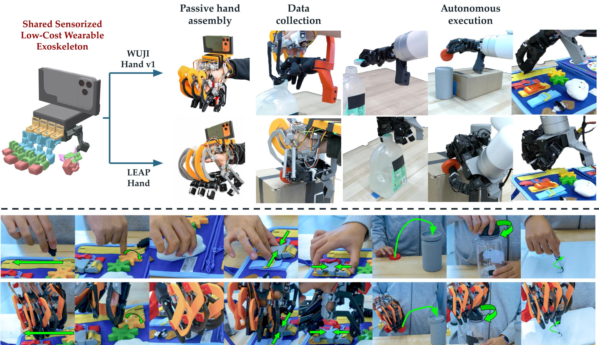
Mechanical Interface
Three components implement the separation of sensing and embodiment: a shared exoskeleton (16 resistive rotary sensors, ~$120 sensing assembly), interchangeable passive hands derived from target kinematics, and embodiment-specific four-bar linkages that transmit MCP/PIP flexion.
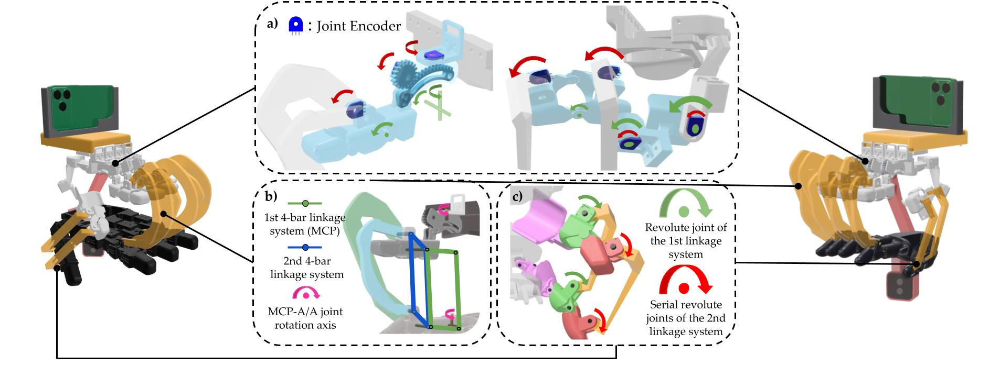
Fig. 2 — Shared exoskeleton + passive hand + linkages (WUJI left, LEAP right).
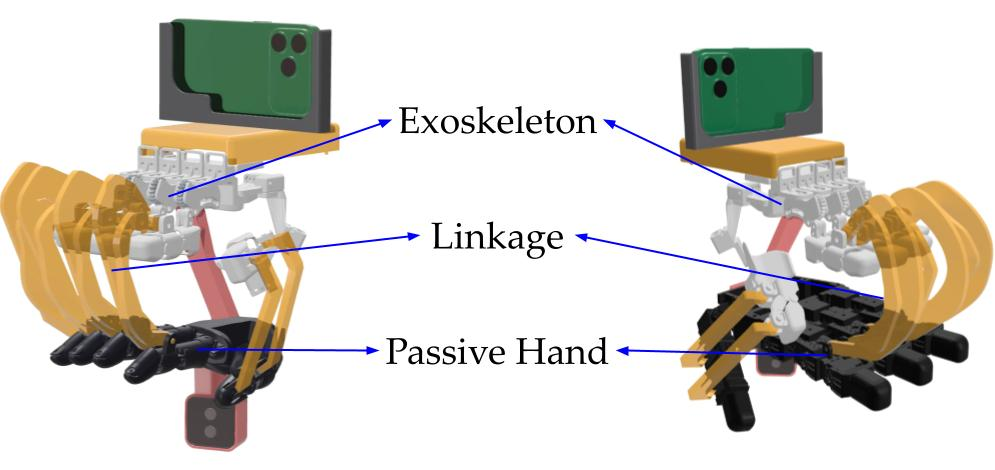
Exoskeleton, linkage, and passive hand.
Sensing and linkage detail (Fig. 3)
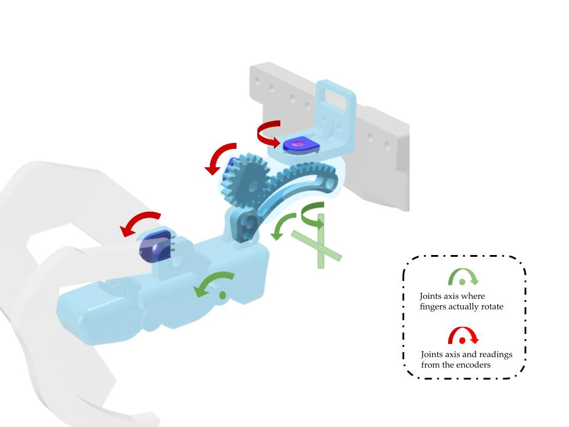
(a) Joint encoders
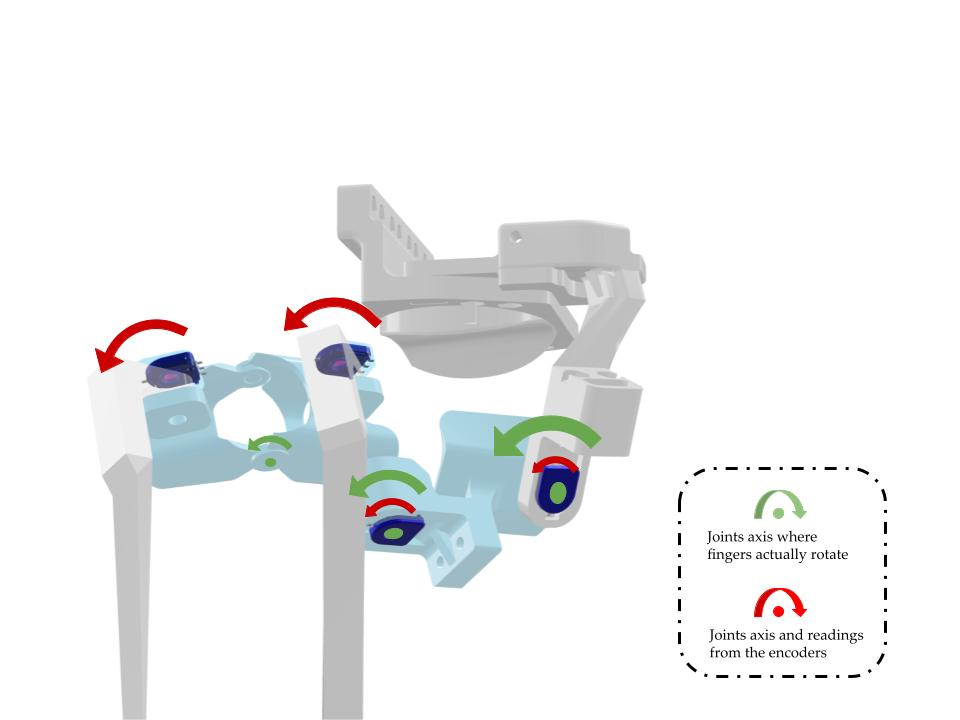
(b) Serial 4-bar linkages
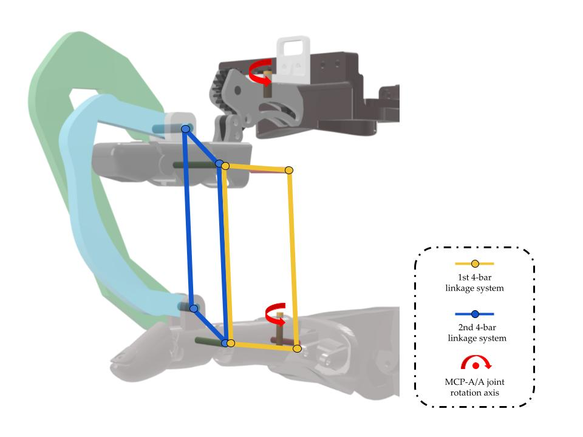
(c) Revolute joints
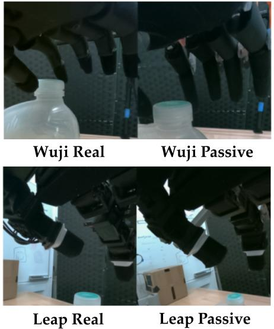
OTHER Benchmark
OTHER (Occupational Therapy-inspired Hand Evaluation and tRaining) is an eight-task suite for functional dexterity during human-operated demonstration collection and autonomous execution. Tasks span precision grasp (Coin), grip–torque (Lid), tool use (Write), constrained pulling (Zipper), rotation (Spin), compression (Squeeze), and fastening (Buckle / Unbuckle).
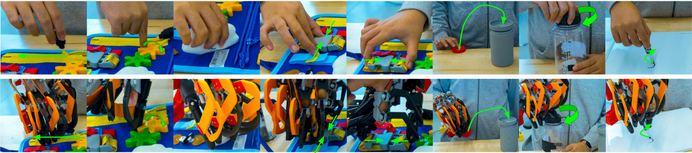
User Study
A 12-participant study (WUJI Hand v1 configuration) measured usability and task performance. Donning took 16.8±6.3 s. Success rates reached 100% on Zipper, Spin, and Lid; no successes on Squeeze or Unbuckle under the optional-continuation protocol. Perceived success averaged 3.83/5.
User-study montage (30×).
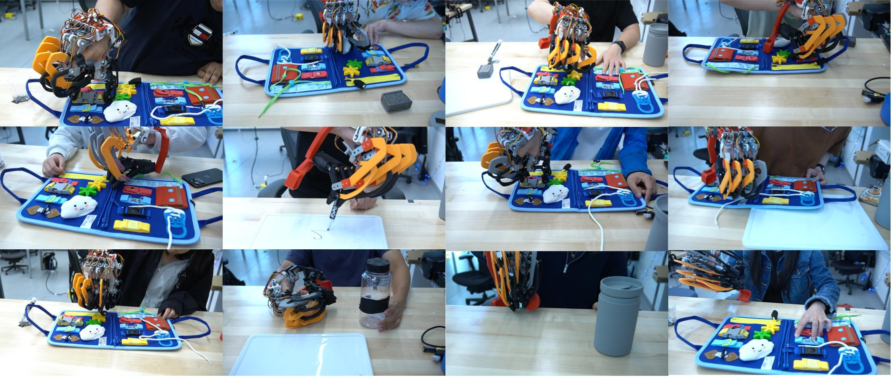
Policy Learning Across Hands
We collect 70 demonstrations per task–hand pair and train Diffusion Policy with wrist RGB and relative EE pose. Policies are evaluated on Zipper, Lid, and Coin for both WUJI Hand v1 and LEAP Hand (mounted on a UFactory xArm 6).
| Hand | Zipper | Lid | Coin |
|---|---|---|---|
| WUJI Hand v1 | 16/20 (80%) | 15/20 (75%) | 9/20 (45%) |
| LEAP Hand | 11/20 (55%) | 3/20 (15%) | 13/20 (65%) |
Table III — Policy success rates across robot hands and tasks.
All videos at 1× speed · fully autonomous
ZipperWUJI Hand v1
Reconstruction & Workspace
Mechanism-based joint reconstruction on LEAP recovers passive-hand angles with MAE 1.34°–4.20° (RMSE ≤ 5.50°). Motion-capture validation below; fingertip workspace coverage relative to vision teleoperation is shown in Fig. 6.
Motion-capture validation
Index finger
Thumb
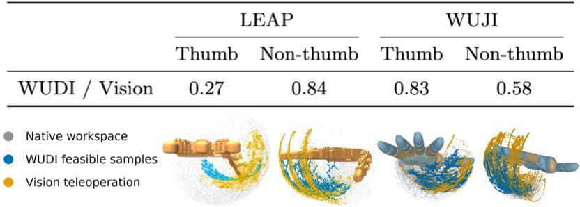
Portable Demonstration Collection
WUDI supports robot-free, portable collection after brief familiarization. On LEAP Hand, an expert operator achieved 3.62–7.71× more successful completions per 5-minute window than vision-based teleoperation on Zipper, Coin, and Lid.
In the WildPortable collection
Design Extensions to Additional Hands
Beyond WUJI Hand v1 and LEAP Hand, five additional passive-hand and linkage designs (CAD + sim-verified) show that adapting WUDI requires only embodiment-specific coupler dimensions and mount adjustments. All seven designs will be released as open-source hardware.
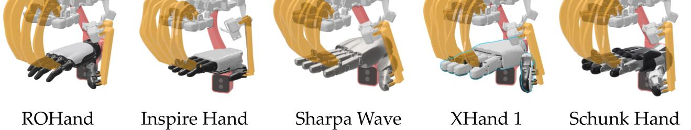
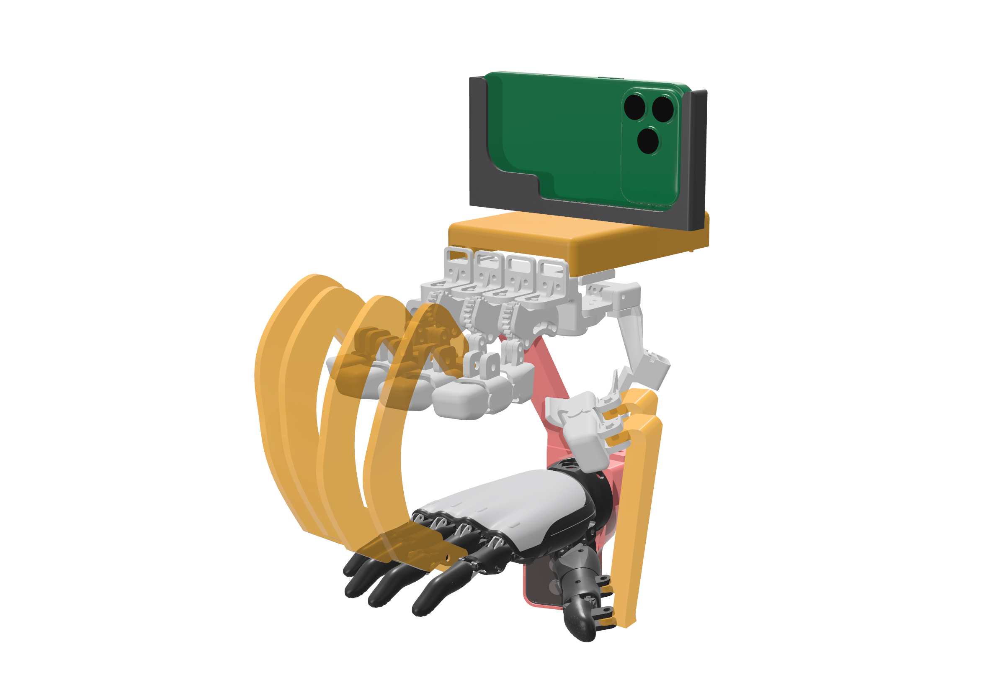
ROHand
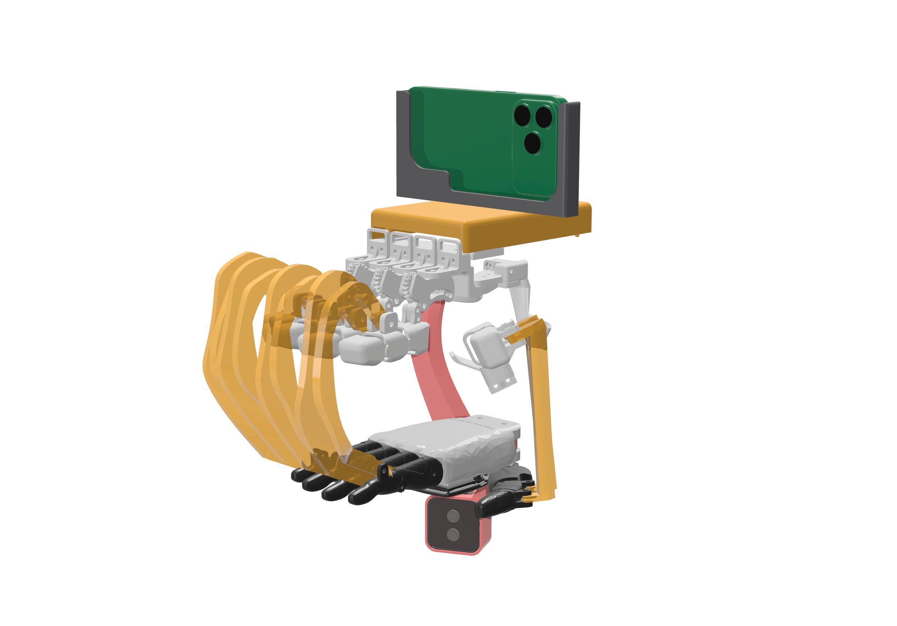
Inspire Hand
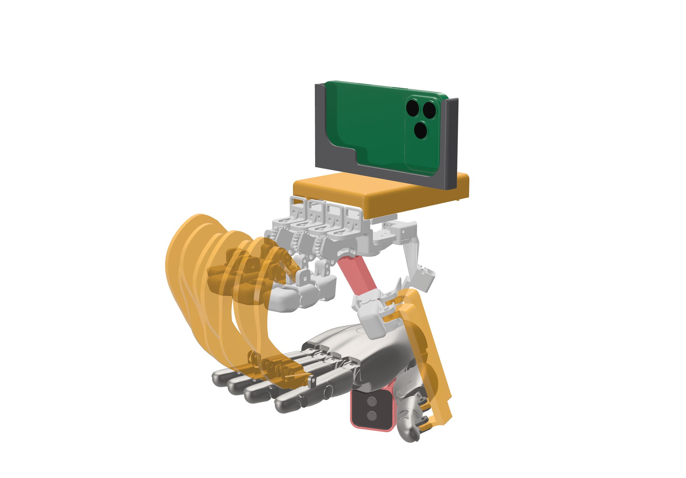
Sharpa Wave
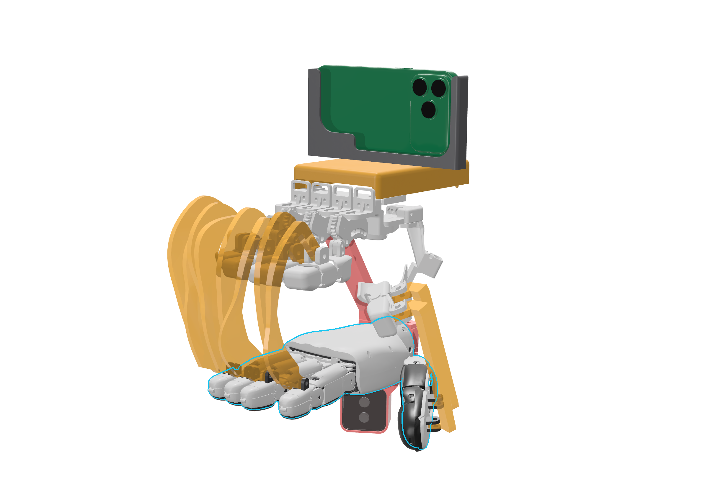
XHand
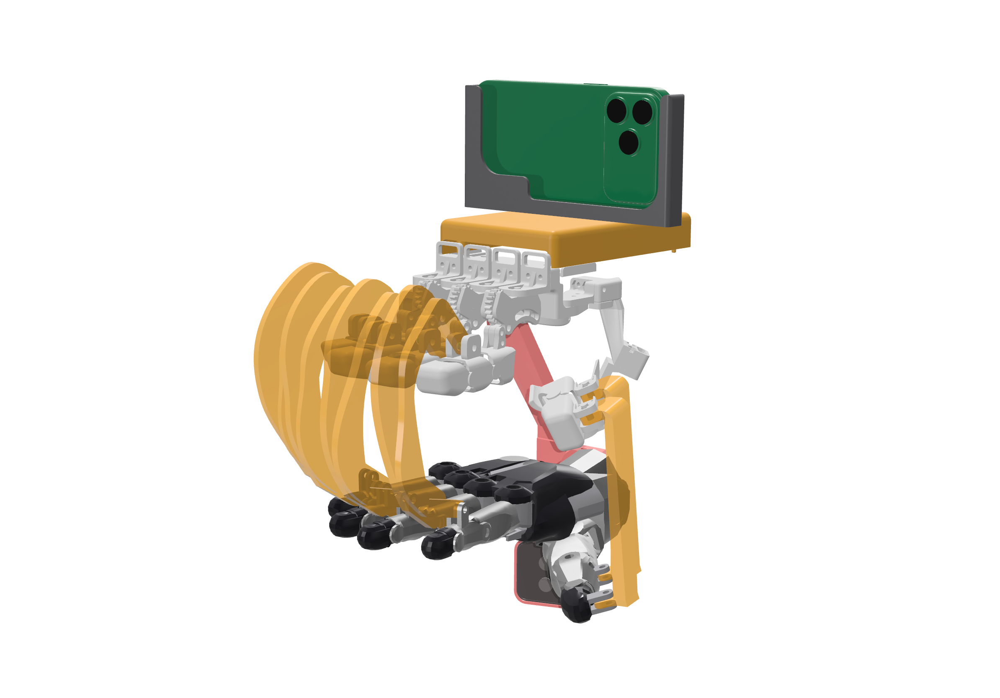
Schunk Hand